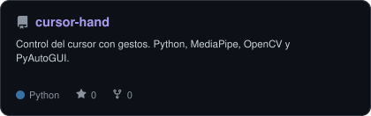
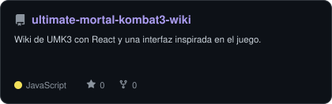
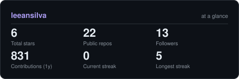
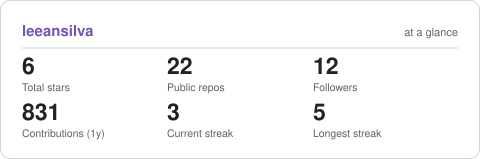

Soy Lean, Full Stack Software Engineer con más de 5 años de experiencia creando aplicaciones web para empresas y organismos públicos. Me especializo en modernizar plataformas legacy y conectar interfaces modernas con los sistemas que ya están en producción.
TypeScript · JavaScript · React · Next.js · NestJS · Node.js · Python · FastAPI · React Native · Chakra UI · SQL Server · SQLite · Cypress · Docker · Git · CI/CD
Next.js, Chakra UI y GitHub API, con tema claro y oscuro.
Una web para la herrería de mi padre, con contacto y herramientas para crear presupuestos.


Proyectos propios y experimentos.
Desarrollo profesional en OCA.

Estadísticas de la cuenta personal. El trabajo privado de OCA no está representado aquí.

